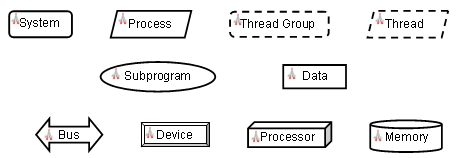
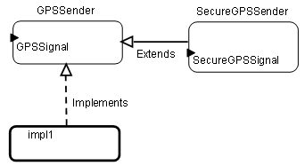
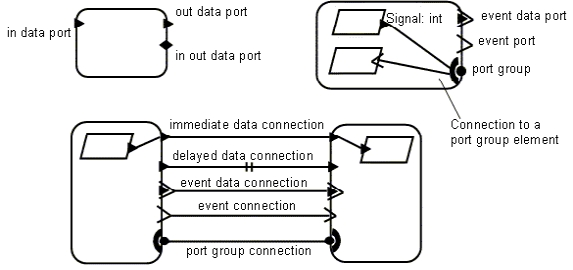
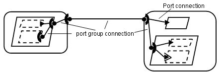
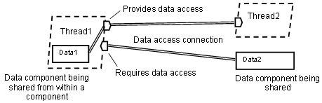
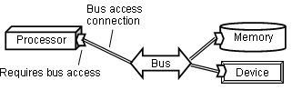
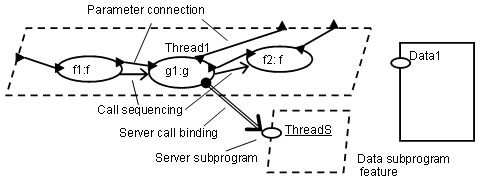
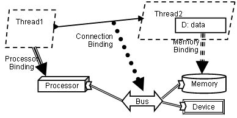
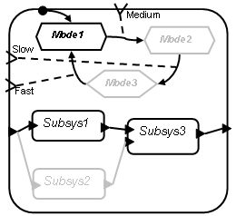

Previous
Next
Previous
Next 
| 18.1 AADL Graphical Symbols |
The AADL graphical notation defines its own graphical
symbols where necessary, and adapts from
UML graphical symbols where appropriate. In this section we define the graphical symbols for the
different component categories, for ports and port connections, for shared access to data and
buses, for subprograms and subprogram calls, for execution platforms and binding of application
components to execution platforms, and for representing component types, component
implementations, and component instances.
| 18.1.1 Component Categories |
Figure 19 shows the graphical symbols of the component
categories in AADL. In cases where the
AADL concept is a semantic variation of the UML concept, the same symbol is used. As
necessary, the AADL logo can be placed as decorator in the upper left corner of the symbol to
distinguish it as an AADL symbol.

Figure 19 AADL Components Graphical Symbols
These graphical symbols are used to describe a system
instance and its components. The same
graphical symbols are used to represent component types, component implementations, their
extension hierarchy, and subcomponents as instantiations of component types and
implementations.

Figure 20 Decorators on Threads
Decorators can be attached to graphical symbols.
Figure 20 illustrates the decoration of threads
with threads properties that are relevant in a timing-related view, i.e., it shows whether threads are
periodic, aperiodic, sporadic, or background. In the case of periodic and sporadic threads the
decorator indicates the period. In case of aperiodic and sporadic threads a lightning arrow
indicates the dispatch by an event arrival. Such decorators can be introduced for other properties
and for other component categories.
Figure 21 illustrates the use of the graphical component
category symbols to describe the
components in terms of their type, implementation, and the content of the implementation.
Component types are shown using the basic graphical symbol for the categories. The extension
relation of a component type in terms of another component type is shown with a solid line and an
outlined triangular arrow head. In the example of Figure 21 The system type SecureGPSSender
extends the system type GPSSender. The figure also shows the port GPSSignal
and the port
SecureGPSSignal. The AADL semantics of extends defines that the system type
SecureGPSSender inherits the port GPSSignal from GPSSender, i.e., it has two ports.

Figure 21 Component Types and Implementations
Figure 21 also shows the representation of component
implementations, the graphical symbol
shown using the bold-faced graphical symbol. The relation to the component type is expressed by
a dashed line with an outlined triangular arrow head. Component implementation names are shown
as dot (“.”) separated the component type identifier and component implementation identifier.
If the
implements relation is shown the component type name may be omitted.

Figure 22 Subcomponents and Component Instances
Subcomponents and component instances are shown using
the graphical symbol of the
component category. If subcomponents are shown as the content of component implementations,
the component implementation may be shown using the bold-faced graphical symbol. Components
in the system instance hierarchy are shown using the graphical symbol of the component
category. The subcomponent or component instance name may be shown as label with
underscore to distinguish it from the component classifier label – as necessary.
| 18.1.2 Ports and Port Connections |

Figure 23 Ports and Port Groups
Figure 23 shows the graphical symbols for ports.
The ports are placed anywhere on the perimeter
of the component graphical symbol. One possible convention is to place incoming ports on the left
and out ports on the right. Port names may be optionally shown with the data type of a data or
event data port may following a colon.
Data ports are represented by a solid triangle, event
ports by an arrow, and event data ports by a
combination of both. The port direction is indicated by the direction of the symbol tip.
Port groups
are represented by a half circle and a solid ball with the ball always facing to the outside of a
component symbol. Inside a component individual ports or port groups of subcomponents may be
connected to the half circle of the port group, as shown in the upper right of Figure 23. The
ports
connected to a port group can be of different direction.
A port connection connects two ports. Connections
can be made between components are the
same level of the system hierarchy, i.e., subcomponents within the same implementation, or
between a component and its enclosing component. If a port has multiple outgoing or incoming
connection they may either be shown as separate lines or as a single line with branch points.

Figure 24 Port Group Composition and Connections
Connections between event and event data ports are shown
as a single solid line. Data ports have
immediate and delayed connections. A single solid line indicates an immediate connection
between two data ports. A delayed connection between data ports is marked with a double line
crossing the connection line. Port group connections are shown as a single solid line.
Figure 24 shows a set of port group in a system hierarchy.
Starting from the left one thread
supplies a data port and the other thread furnishes a port group. This composite port group is
routed from a process via its enclosing system to another system. Within that system the port
group is decomposed into one data port and a port group. That port group is routed to a process,
which decomposes it into its constituents, a data port and an event data port.
| 18.1.3 Shared Access to Data and Buses |
Figure 25 illustrates the graphical notation to represent
sharing of data. Thread1 requires access
to a data component and contains a data component Data1, to which it provides access to other
components. The provides data access and requires data access features are shown pointing in
the direction of the component requiring data access. Data access connections are shown as a
double line. In our example the required data access of Thread2 is resolved to the data component
Data1. Similarly, the required data access of Thread1 is resolved to the data component Data2,
which exists at the same system level as Thread1.

Figure 25 Shared Data Access
Figure 26 illustrates access between processors, memory,
and devices through shared access to
buses. The required and provided bus access symbols differ from those for data by the back
being
angular rather than straight. Memory, devices, processors, and systems can have required bus
access. Processors and systems can have provided bus access. Bus access connections are
shown as a solid double line, the same symbol as data access connections. Required bus access
is resolved to a bus component the same way required data access is resolved to a data
component.

Figure 26 Shared Bus Access
| 18.1.4 Subprogram Calls and Parameter Passing |
Figure 27 illustrates the graphical symbols for
subprogram call sequences and parameter passing.
The sequence of calls is shown by a set of subprogram graphical symbols with the call order
indicated by a line with an open arrow. Optionally the call sequence can be inferred from the
left to
right ordering of the subprogram symbol placements. Figure 27 shows a subprogram call
sequence with two calls to the same subprogram f. The call name is shown in italic font
and the
name of the subprogram type being called is shown in regular font. Subprogram parameters are
shown using a solid triangle - the same symbol as used for data ports. Parameter names can be
shown in italic font and their data type in regular font. A parameter connection is shown
as a solid
line between two parameters or between a parameter and a data port of a thread containing the
subprogram call. The direction of parameter connections follows the direction of the call sequence.
Figure 27 illustrates a server subprogram as feature
of a thread ThreadS. The subprogram call g1
in Thread1 is a remote call to this server subprogram, shown as a double line with an open arrow
and a solid ball on its ends. Figure 27 also illustrates a subprogram as a feature of a data
component.

Figure 27 Subprogram Calls and Parameter Passing
| 18.1.5 Execution Platform Bindings |

Figure 28 Bus Access and Execution Platform Binding
Figure 28 illustrates binding of application components
to execution platform components. Binding
of threads to processors is shown as a solid triple line with a solid triangular arrow. Bindings
to
memory are shown as a dashed triple line with a solid triangular arrow. Connection bindings are
shown as a bulleted line with a solid triangular arrow.
| 18.1.6 Modes and Mode Transitions |
Figure 29 illustrates the graphical representation for
modes. Individual modes are shown as
diamonds. The initial mode is shown with a bullet and a transition to the appropriate mode.
Mode
transitions are shown as simple lined arrows with dashed connections indicating the event(s)
causing the mode transition. The content of a component implementation is shown as modal
configuration. The current mode and the members of the current mode are shown in black, while
other modes and inactive components, ports, and connections are shown in gray.

Figure 29 Modes and Mode Transitions